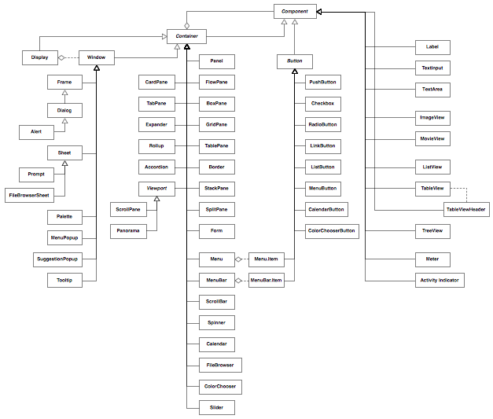
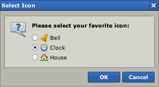
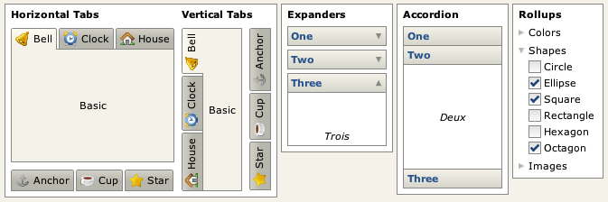
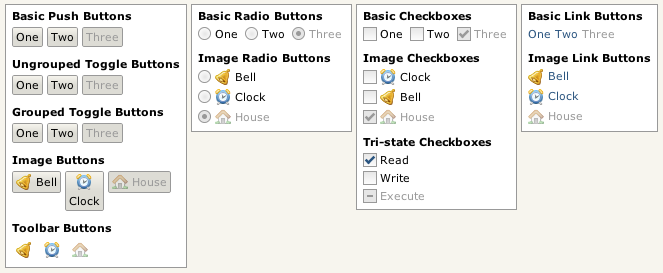
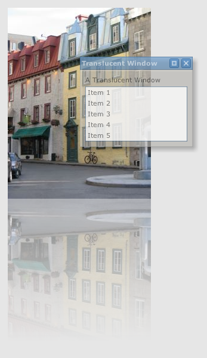

Like most modern development platforms, Pivot provides a comprehensive set of foundation classes that together comprise a "framework". These classes form the building blocks upon which more complex and sophisticated applications can be built.
Pivot classes are grouped into the following primary categories:
- Core - A set of common, non-UI classes.
- WTK - Classes for user interface development, including windows, dialogs, buttons, lists, text input, layout, drag and drop, etc.
- Web - Classes to facilitate implementation of and communication with remote data services.
- Charts - Classes for adding interactive charting capabilities to Pivot applications.
The classes in each category are packaged and distributed in a corresponding library or set of libraries:
Core
pivot-core-[version].jar
- org.apache.pivot.beans - Classes that facilitate and simplify programmatic interaction with Java bean types.
- org.apache.pivot.collections - A set of classes and interfaces that serve as generic collections as well as the data model for UI components.
- org.apache.pivot.collections.adapter - A set of collection implementations that are backed by java.util collections.
- org.apache.pivot.collections.concurrent - A set of thread-safe collection implementations.
- org.apache.pivot.collections.immutable - A set of read-only collection implementations.
- org.apache.pivot.io - Classes related to input/output operations.
- org.apache.pivot.json - Classes for working with JSON data.
- org.apache.pivot.serialization - Classes for use in data serialization.
- org.apache.pivot.sql - Classes for working with SQL data.
- org.apache.pivot.text - Classes for working with text.
- org.apache.pivot.util - A collection of common utility classes.
- org.apache.pivot.util.concurrent - Classes to simplify the execution of background tasks.
- org.apache.pivot.xml - Classes for working with XML data.
WTK
pivot-wtk-[version].jar
- org.apache.pivot.wtk - Classes that define the structure and behavior of WTK user interface components.
- org.apache.pivot.wtk.content - Classes representing component data, such as list items or table rows.
- org.apache.pivot.wtk.effects - Classes supporting visual effects such as blurs, reflections, and drop shadows.
- org.apache.pivot.wtk.effects.easing - Classes representing "easing" operations for producing natural-looking transitions. Based on easing equations developed by Robert Penner.
- org.apache.pivot.wtk.media - Classes representing media resources.
- org.apache.pivot.wtk.skin - Theme-independent skins and abstract base classes for theme-specific skins.
- org.apache.pivot.wtk.text - Text object model classes.
- org.apache.pivot.wtk.text.validation - Classes for validating user-entered text.
pivot-wtk-terra-[version].jar
- org.apache.pivot.wtk.skin.terra - Defines skin classes for the default "Terra" theme.
Web
pivot-web-[version].jar
- org.apache.pivot.web - Classes for communicating with HTTP-based web services.
pivot-web-server-[version].jar
- org.apache.pivot.web.server - Classes to facilitate access to and development of web query services.
Charts
pivot-charts-[version].jar
- org.apache.pivot.charts - A collection of components for use in charting applications.
- org.apache.pivot.charts.content - Classes representing chart data.
Most of Pivot's classes live in the WTK libraries.
Architecture
The design of WTK is based on the model-view-controller architecture employed by many current user interface toolkits. In WTK, model data is represented by the generic collection interfaces defined in the Core library (most commonly org.apache.pivot.collections.List and org.apache.pivot.collections.Map). The component classes discussed in the next section represent the controller, which acts as the intermediary between the model data and the component's "skin", the MVC view.
The skin defines the actual appearance of the component, as a component has no inherent visual representation. The skin also defines how the component responds to user input including keyboard and mouse events. Components may have multiple skins (though only a single skin can be installed on any component instance). However, the existence of the skin should be effectively transparent to most developers, as skins do not expose any public API. All interaction with the skin takes place via the skin's component.
Skins can be "styled" in a manner similar to CSS. Through the component, a skin may expose a set of style properties such as "color" and "font" that a user can change to achieve a custom application appearance without having to write a new skin. By default, all components use the skin classes defined by the Terra look and feel. The skins in this package provide considerable flexibility in setting style properties. Almost every aspect of a Terra skin's appearance can be varied via a style property. Terra also provides customizable "color schemes" that allow a designer to easily replace the color palette for an entire application.
The appearance of some components can be further customized using "renderers", which are essentially "lightweight components" used to paint the content of the actual component. For example, WTK buttons allow a caller to define the renderer used to paint the button's data, and list views support customized painting of list items via a renderer. Renderers allow large collections of data to be presented very efficiently, as the renderer is used to "rubber stamp" the content, instead of creating an actual component instance for each data element, which would require more memory and processor time.
Additionally, using renderers, component content is painted the same regardless of the skin that is currently applied. This allows applications to present information consistently as skins are updated or new skins are released.
Skins and renderers use the Java2D API to draw themselves. See the Java2D Tutorial for more information on Java2D.
Class Hierarchy
The following diagram shows the WTK component class structure:

WTK class hierarchy (large version).
{kind=link}
As shown in the diagram, all WTK components extend an abstract base class called Component. Some classes extend Component directly, and others extend another abstract class named Container that itself extends Component. Non-container components are used to present data, collect user input, or both. Container components, as their name implies, contain other components, creating a component hierarchy. Containers serve to arrange and present their child components.
The root of the container hierarchy is the "display", represented by an instance of the Display class. The only allowed direct descendants the display are the window classes, which act as entry points into the user interface. Window classes can contain any type of component except other windows and the display itself. Windows also have an optional owner; owned windows always remain on top of their owner and are automatically hidden when their owner is hidden.
The window classes include the following types:
-
Window - Base window class; it is not abstract and is the most basic means by which content may be placed on the screen. It simply provides an undecorated region in which other components may be placed.
-
Frame - A window with a title bar and border for dragging and resizing.
-
Dialog - A frame that is generally used for collecting user input (engaging in a "dialog" with the user); may optionally be "modal", blocking input to its owner.
-
Alert - A dialog that is generally used to present brief notifications to the user.
-
Sheet - A window that, like a dialog, is generally used for collecting user input; however, unlike dialogs, sheets always have an owner, and are always modal over the owner's client area.
-
Prompt - A sheet that is generally used to present brief notifications to the user; the sheet equivalent of Alert.
-
MenuPopup - A popup window that is used to present a menu to the user. It can be used stand-alone as a context menu, but is also used by other components including MenuBar and MenuButton.
-
SuggestionPopup - A popup window that provides "auto-complete" functionality for a text input.
-
Palette - A floating tool palette window.
-
FileBrowserSheet - A sheet that allows the user to browse the local file system.
-
Tooltip - A small, popup-like window that disappears as soon as the user moves the mouse.
Below is an example of a Pivot dialog:

A Pivot dialog.
Containers
Other Pivot containers can be loosely grouped into three categories: layout containers, navigation containers, and composites.
Layout Containers
Layout containers are used primarily to arrange other components on the screen. Layout containers include:
-
FlowPane - Container that arranges components in a horizontal line, wrapping when contents don't fit on a single line.
-
BoxPane - Container that arranges components in a line, either vertically or horizontally.
-
GridPane - Container that arranges components in a two-dimensional grid where each cell is given the same size, based on the available width and height.
-
TablePane - A container that lays out its children in a two-dimensional table structure, optionally spanning table cells.
-
Border - A container with an optional title that draws a border around a single content component.
-
StackPane - Arranges components in layers, like a stack of transparencies.
-
SplitPane - Provides a draggable divider between two components allowing a user to dynamically change the size of each; may be horizontal or vertical.
-
Form - Arranges components in a "form" layout with labels to the left and optional flag messages (e.g. to alert a user to input errors) to the right.
-
Panel - A container that performs no layout, allowing the application to specify absolute component positions and sizes.
Navigation Containers
Navigation containers are used to maximize screen real estate, showing or hiding their children as needed. Navigation containers include:
-
CardPane - A simple "card stack" of components, only one of which is visible at a time.
-
TabPane - Similar to CardPane but with built-in "tabs" for navigation; may optionally be "collapsed" such that only the tab buttons show.
-
Accordion - Similar to TabPane, but subcomponents are presented like the folds of an accordion, with headers for navigating between panels.
-
Expander - Similar to a border but collapsible such that only the title shows.
-
Rollup - Similar to Expander but with an aribitrary component as a heading instead of a string; when collapsed, only the first component is visible. Can be nested to create the appearance of a "tree" structure.
-
Viewport - Abstract base class for a scrollable region. Viewport sublcasses include:
- ScrollPane - A scrollable area with optional vertical and horizontal scroll bars as well as row and column headers.
- Panorama - A scrollable area with optional up/down/left/right arrows.
The image below is an example of some Pivot navigation containers:

Some Pivot navigation containers.
Composites
Composites are simply components that are implemented using other components. For example, a ScrollBar is a container consisting of of two button components and a "thumb", the draggable area that allows the user to scroll by clicking and dragging the mouse. Composites include:
-
ScrollBar - Allows a user to select one of a range of values using up/down buttons or a draggable "thumb" that also represents an extent value. Most often used to facilitate scrolling in a scroll pane.
-
Spinner - An "up/down" control allowing a user to cycle through a range of pre-defined values.
-
Slider - Allows a user to select one of a range of values by dragging the mouse.
-
Menu - Displays a list of actions to the user. Generally displayed in a popup context menu or as part of a menu bar or menu button.
-
MenuBar - Provides access to a collection of sub-menus.
-
Calendar - Allows a user to select a date.
-
ColorChooser - Allows a user to select a color.
-
FileBrowser - Allows a user to select a file.
Components
Non-container components are generally used to present data to the user, retrieve input from the user, or both. Non-container components include:
-
Label - A simple component used to display an uneditable block of (optionally wrapped) text.
-
ImageView - A component that displays a static, optionally scaled, image.
-
Button - Abstract base class for buttons, which include:
- PushButton - A basic push button. Can be single-push or toggle (selectable); toggle push buttons can be placed in groups such that only one can be selected at at time.
- Checkbox - A button that displays a checkmark when selected. Supports "tri-state", or "partial" selection.
- RadioButton - A button that behaves like an old-style car radio button; generally part of a group where only one button can be selected at time.
- LinkButton - A single-push button that looks like an HTML hyperlink.
- ListButton - A button that displays a drop-down list of choices when pushed and reflects the user's selection.
- CalendarButton - A button that displays a pop-up calendar when pushed and reflects the user's selection.
- ColorChooserButton - A button that displays a pop-up color chooser when pushed and reflects the user's selection.
- MenuButton - A button that displays a drop-down list of menu items; can optionally reflect the user's selection allowing the action associated with the item to be repeated (i.e. behave like a "split button").
- Menu.Item - A button that provides behavior for menu items.
- Menu.BarItem - A button that provides behavior for menu bar items.
-
Separator - A simple horizontal rule component.
-
TextInput - A component for entering a single line of text.
-
TextArea - A component for viewing or entering multiple lines of (optionally formatted) text.
-
ActivityIndicator - Displays an indeterminate progress state.
-
Meter - Displays a progress bar reflecting a completion percentage.
-
ListView - Displays a list of optionally selectable items arranged vertically.
-
TableView - Displays data grouped into rows and columns. Columns are sortable and resizeable, and rows are optionally selectable.
-
TreeView - Displays a hierarchical data structure. Tree nodes are optionally selectable and collapsible.
The image below shows some examples of Pivot button components:

Some Pivot buttons.
Internationalization/Localization
While Pivot applications can be localized using the standard Java localization APIs, Pivot supports additional localization features using JSON-based resource files, which are more powerful and flexible than Java's standard properties files: hierarchical resource data is much more easily represented, and strings can be encoded in UTF-8 rather than ISO-8859, making it easier to author content for locales with characters that are not available in the ISO-8859 character set.
XML Markup
Pivot applications can be constructed entirely in Java code, but it is often more efficient (and readable) to define a Pivot application using XML. Pivot supports an XML markup language called BXML that can be used to help simplify user interface development. The following example demonstrates the use of BXML to create two buttons labeled "OK" and "Cancel" arranged in a horizontal line:
<BoxPane xmlns:bxml="http://pivot.apache.org/bxml"
xmlns="org.apache.pivot.wtk">
<PushButton buttonData="OK"/>
<PushButton buttonData="Cancel"/>
</BoxPane>
A more detailed overview of BXML can be found in the BXML primer section.
Effects
The org.apache.pivot.wtk.effects package provides support for adding visual richness to Pivot applications. Effects in Pivot are implemented primarily via two types of classes: decorators and transitions. Decorators allow a caller to attach additional rendering behavior to a component, such as blurs, fades, or drop shadows. Transitions are timed behaviors that are often used to animate elements of a user interface.

Decorator example.
Web Queries
"Web queries" are Pivot's native means of communicating with remote data services. Fundamentally, a web query is simply an HTTP request. However, the default data format used by a web query is not HTML, but JSON. This allows a caller to effectively invoke database-like operations over the web - the HTTP methods are used in a manner that is very similar to their corresponding SQL equivalents:
| Behavior | SQL Query | HTTP Method |
| Create | INSERT | POST |
| Read | SELECT | GET |
| Update | UPDATE | PUT |
| Delete | DELETE | DELETE |
These operations, sometimes referred to as "CRUD", form the basis of the Representational State Transfer (REST) model of building web services. Pivot web queries are designed primarily to facilitate interaction with JSON-based REST services. However, they are sufficiently generic to support communication with any type of HTTP-based service, using any data format (for example, XML). This renders the classes in the org.apache.pivot.web package applicable to a broad range of server communication scenarios.
In addition to the client APIs defined in org.apache.pivot.web, the org.apache.pivot.web.server package provides classes that simplify the task of implementing and interacting with HTTP web services. QueryServlet provides an abstract base class for implementing web query servlets, and ProxyServlet provides an HTTP proxy that allows an unsigned applet to issue web queries to services outside of its origin server.
Next: Hello, World!